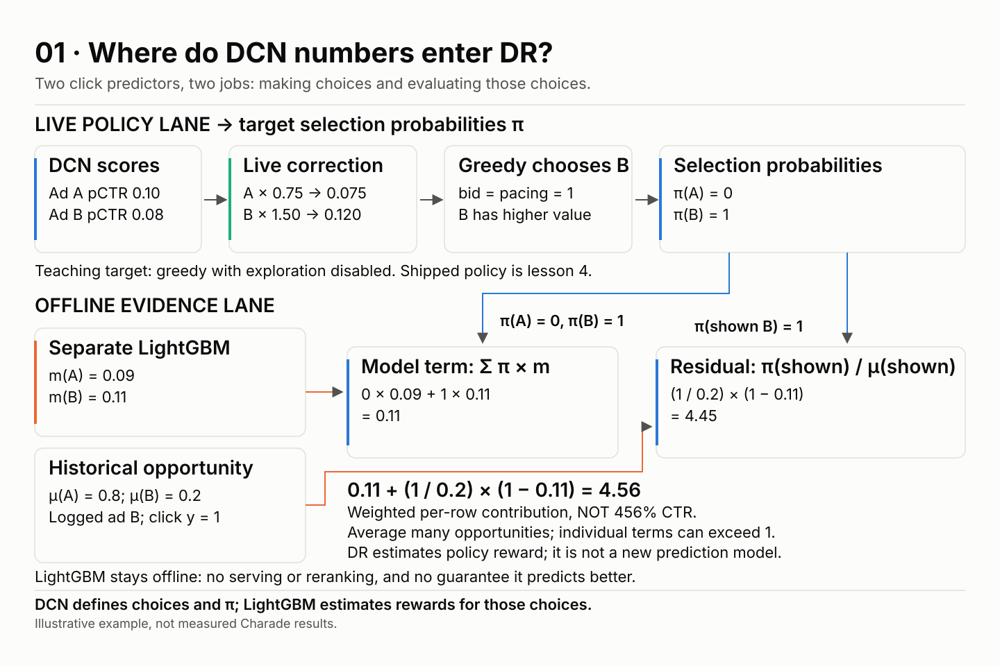
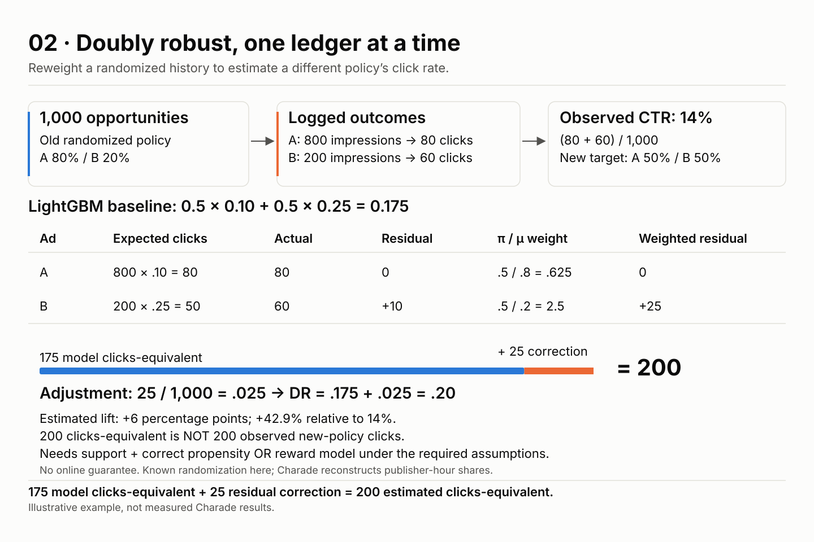
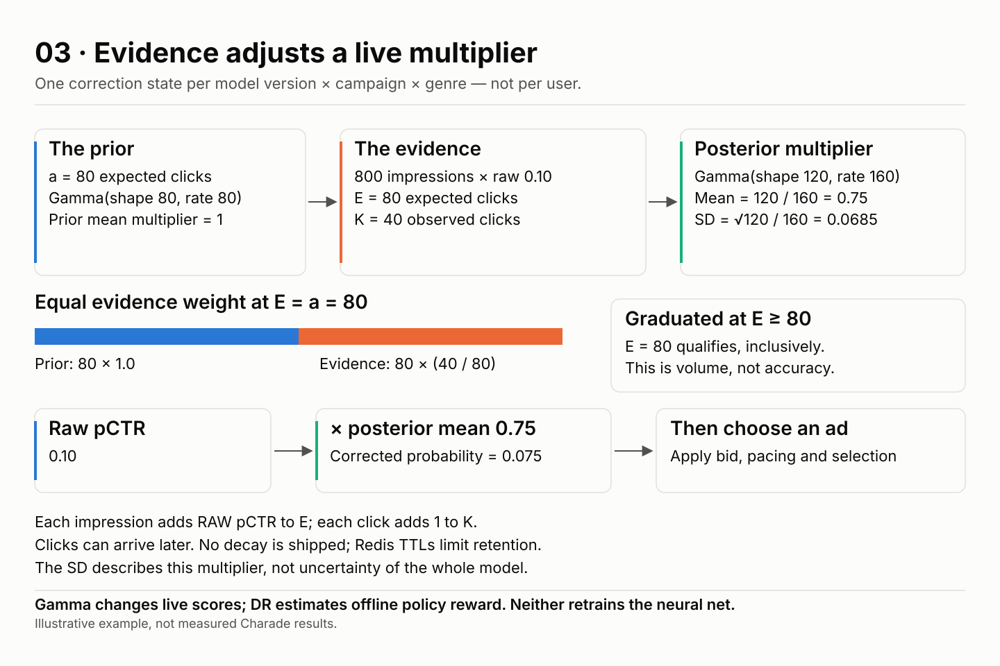
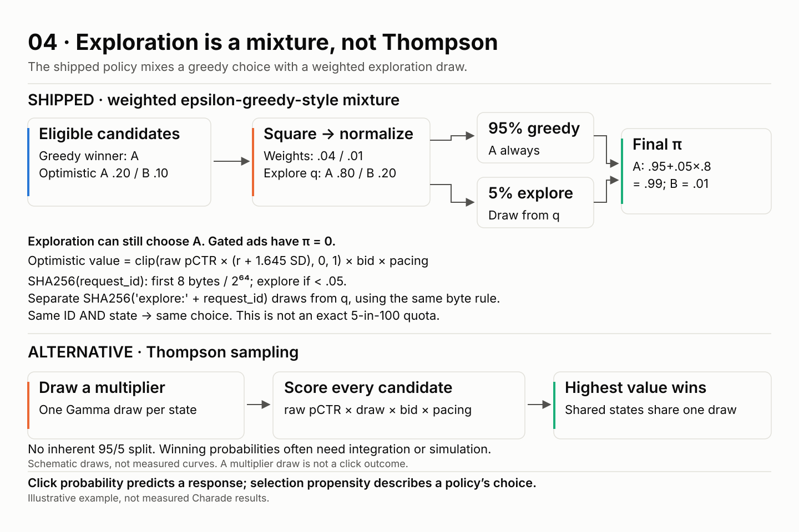
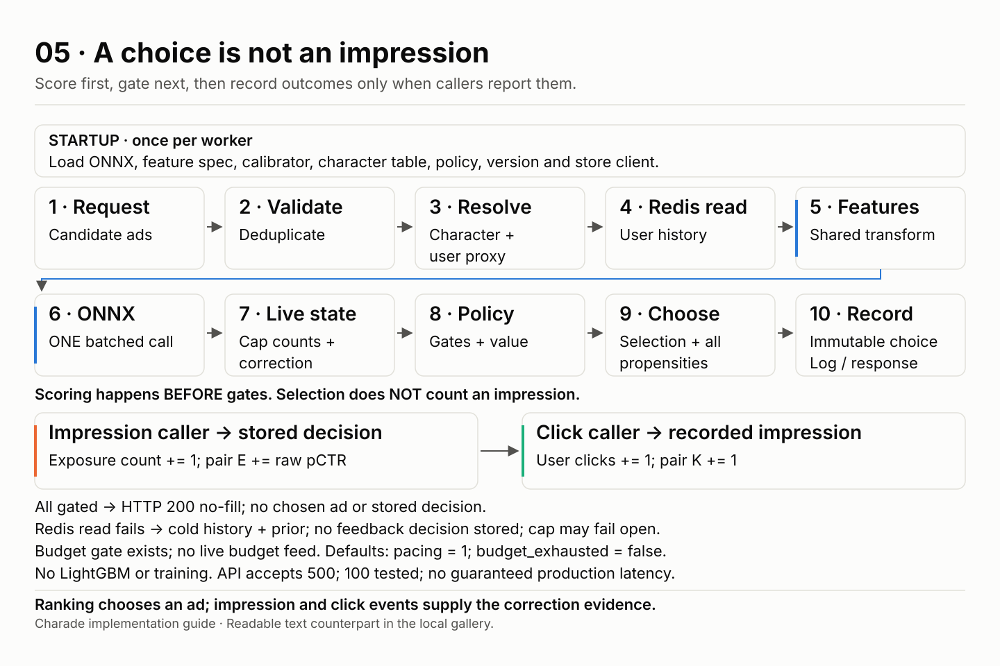
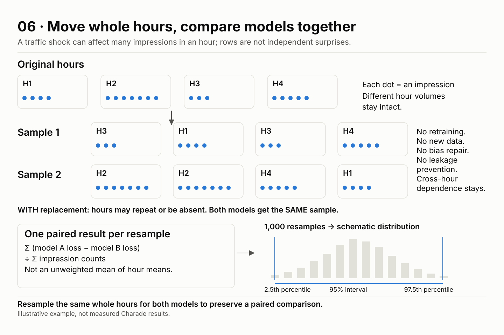
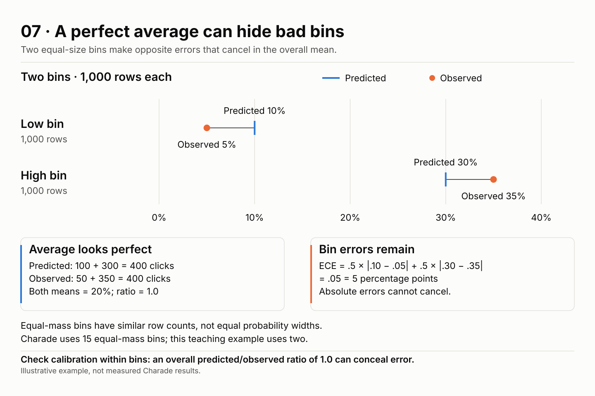
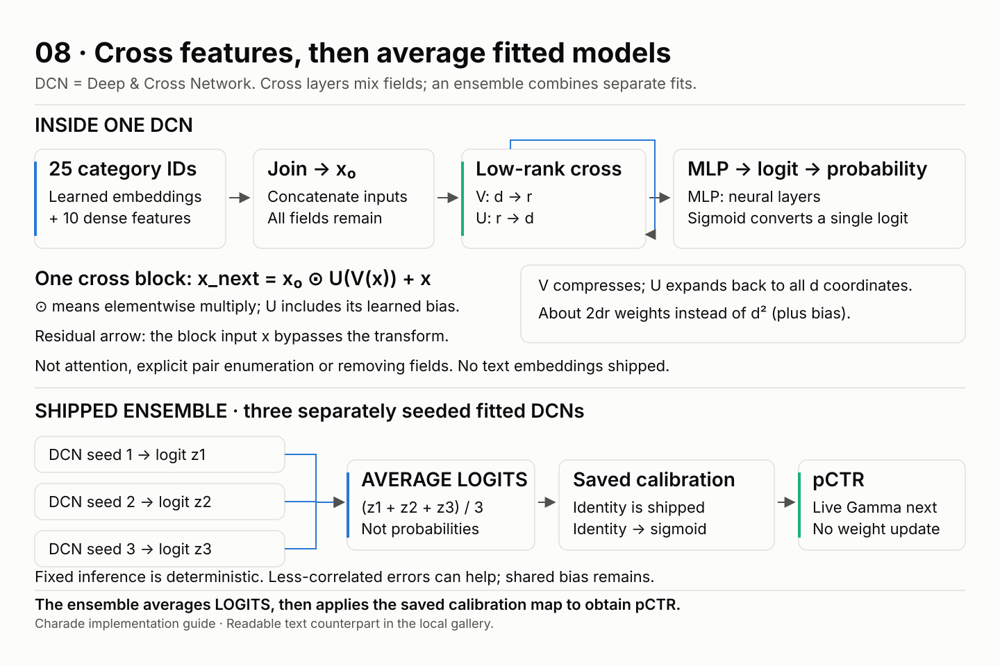

01 · Where do DCN numbers enter DR?



Read the explanation and data
π (pi) is the target policy’s selection probability; μ (mu) is the historical logging policy’s selection probability. pCTR is predicted click-through rate; m is the separate reward model’s click prediction.
In the teaching policy, DCN gives A 0.10 and B 0.08. Live multipliers 0.75 and 1.5 change their values to 0.075 and 0.12 with bid and pacing both 1. Greedy therefore chooses B: π(A)=0, π(B)=1. Exploration is disabled for this example; lesson 4 shows the shipped mixture.
LightGBM separately predicts m(A)=0.09 and m(B)=0.11. Historical propensities are μ(A)=0.8 and μ(B)=0.2. The logged ad is B and it was clicked (y=1). Both π entries enter Σπm, while π(B) also enters the importance weight π(B)/μ(B).
The DR contribution is 0×0.09 + 1×0.11 + (1/0.2)×(1−0.11) = 4.56. This weighted per-row contribution is not a 456% CTR prediction. The policy estimate averages many historical opportunities; individual contributions can exceed 1.
DCN and LightGBM solve the same prediction task but serve different uses. LightGBM is not in serving, is not reranking, and is not guaranteed to be better. DR is an offline policy estimator, not a new prediction model.
Illustrative example, not measured Charade results.
02 · Doubly robust, one ledger at a time



Read the explanation and data
DR means doubly robust. In 1,000 opportunities, a known randomized logging policy selects A 80% of the time and B 20%. A has 800 impressions and 80 clicks; B has 200 impressions and 60 clicks. The observed CTR is 140/1,000=14%.
The new target selects A and B equally. LightGBM predicts m(A)=0.10 and m(B)=0.25. Its target-policy baseline is 0.5×0.10 + 0.5×0.25 = 0.175, or 175 clicks-equivalent over 1,000 opportunities.
For A, expected historical clicks are 800×0.10=80. Actual clicks are 80, so the residual is zero; its target/logging weight is 0.5/0.8=0.625. For B, expected clicks are 200×0.25=50; actual clicks are 60. The +10 residual is weighted by 0.5/0.2=2.5, adding 25 clicks-equivalent.
The adjustment is 25/1,000=0.025. DR=0.175+0.025=0.20, or 200 clicks-equivalent. These are estimated, not 200 observed clicks from running the new policy. Estimated absolute lift is 20%−14%=6 percentage points; relative lift is 6/14=42.9%.
The doubly robust consistency property requires support and a correct propensity model OR a correct reward model, along with the necessary identification and estimation assumptions (including valid logged outcomes and no unaccounted confounding). It is not an online performance guarantee.
This known-randomization toy differs from Charade’s reconstructed publisher-hour impression shares and reconstructed candidate sets. Those are estimates, not known randomized propensities.
Illustrative example, not measured Charade results.
| Ad | Impressions | Clicks | Model expected | Residual | π/μ | Weighted residual |
|---|---|---|---|---|---|---|
| A | 800 | 80 | 80 | 0 | 0.625 | 0 |
| B | 200 | 60 | 50 | +10 | 2.5 | +25 |
03 · Evidence adjusts a live multiplier



Read the explanation and data
Correction evidence is shared by model version × campaign × genre, not keyed by user. A new model version starts a new correction state. The Gamma prior has shape a and rate a, so its mean is 1.
For a=80, 800 impressions with raw model pCTR 0.10 give E=80 expected clicks. Suppose K=40 clicks arrive. The posterior is Gamma(shape a+K=120, rate a+E=160). Its mean is 120/160=0.75 and its standard deviation is √120/160≈0.0685.
The posterior mean is a weighted blend of the prior multiplier 1 and the evidence ratio K/E=0.5. At a=E=80 the two receive equal weight, producing 0.75. Graduation uses E≥80 inclusively: E=80 has graduated. It measures evidence volume, not accuracy.
Multiply raw pCTR 0.10 by 0.75 to obtain 0.075 before bid, pacing and selection. Each recorded impression adds its raw, uncorrected pCTR to E. Each attributed click adds one to K. Selection alone does not add evidence.
Click delays temporarily separate impressions from their outcomes. No evidence decay is shipped, but Redis TTLs limit evidence retention. The posterior SD is for the correction multiplier, not a calibrated uncertainty statement for the whole neural model. Gamma changes live scores without neural retraining; DR estimates policy reward offline.
Illustrative example, not measured Charade results.
04 · Exploration is a mixture, not Thompson



Read the explanation and data
The shipped policy is a weighted epsilon-greedy-style mixture, not Thompson sampling. Assume A is the eligible greedy winner. Optimistic values A=0.20 and B=0.10 become squared weights 0.04 and 0.01, normalized to explore probabilities q(A)=0.8 and q(B)=0.2.
The 95% greedy branch always picks A. The 5% exploration branch samples from q and can also pick A. Thus π(A)=0.95+0.05×0.8=0.99 and π(B)=0.05×0.2=0.01. Gated candidates have zero selection probability.
Optimistic value = clip(raw pCTR × (r+1.645×SD), 0, 1) × bid × pacing. r and SD are the live correction multiplier’s posterior mean and standard deviation.
The exploration bucket uses SHA256(request_id), interprets its first eight bytes as an unsigned big-endian integer, and divides by 2^64. Values below 0.05 enter exploration. A separate SHA256('explore:'+request_id), with the same first-eight-byte rule, supplies the draw from q. The same request ID AND state reproduce the choice. This is not an exact five-in-100 quota.
Thompson alternative: draw a plausible Gamma multiplier for each correction state, score raw pCTR × draw × bid × pacing, and choose the highest score. Candidates sharing a correction state must share one draw. This is a schematic algorithm, not measured curves.
Thompson has no inherent 95/5 split. A candidate’s propensity is the probability of winning the competition across all draws, which often requires integration or simulation. A multiplier draw is not a sampled click outcome. Raw pCTR is not selection propensity.
Illustrative example, not measured Charade results.
05 · A choice is not an impression



Read the explanation and data
At startup each worker loads the ONNX model, feature specification, saved calibrator, character table, policy, model version and store client once. LightGBM and training are not part of the request path.
A rank request validates and deduplicates candidates, resolves the character and user proxy, reads user history from Redis, and calls the shared feature transform. ONE ONNX batch scores all candidates. The worker then gets cap counts and live correction state, applies gates and corrected values, selects an ad, and computes every candidate’s exact propensity.
The chosen decision is stored immutably for feedback joins, then the request is logged and returned. Actual model scoring happens before gates. Choosing an ad does not count an impression.
The impression caller submits an impression ID and request ID. The server joins the stored decision to resolve the chosen ad, increments exposure counts, and adds the chosen ad’s raw pCTR to pair expected clicks E. The click caller joins the recorded impression; user click counters and pair observed clicks K each increment. Identical event retries are deduplicated within the retention window.
If all ads are gated, the API returns HTTP 200 with no-fill, no chosen ad, and no stored decision. If the Redis read fails, it serves degraded cold history and the prior correction, stores no feedback decision for that request, and the frequency cap may fail open.
The policy has a budget gate, but there is no live budget feed. Pacing defaults to 1 and budget_exhausted to false. The API accepts 500 candidates; the recorded load test used 100. That is not a guaranteed production latency.
Implementation details: src/charade/serving/app.py, src/charade/ranking/policy.py and src/charade/ranking/correction.py. No data files are needed to read this lesson.
06 · Move whole hours, compare models together



Read the explanation and data
An hour-level traffic shock can affect many impressions together. Resampling independent rows would discard this within-hour dependence. Hour-block bootstrap moves all impressions in each selected hour together.
Starting from H1, H2, H3, H4, one sample can be H3, H1, H3, H4; the next can be H2, H2, H4, H1. Sampling is WITH replacement: an hour can repeat and another can be absent. The dot counts are schematic, invented volumes.
The comparison is paired: model A and model B receive the same sampled hours. For each replicate, add all per-impression loss differences in the sampled hours, counting repeated hours each time, and divide by the total sampled impression count. Do not average the hour means equally when volumes differ.
Repeat 1,000 times. The 2.5th and 97.5th percentiles of the resulting statistic give the percentile 95% interval. The pictured distribution is schematic, not a measured Charade interval.
The bootstrap does not retrain models, create new data, repair bias, or prevent leakage. It captures sampling variation conditional on fitted models and the block design. Dependence across hours remains a limitation.
Illustrative example, not measured Charade results.
07 · A perfect average can hide bad bins



Read the explanation and data
Two equal-size bins each contain 1,000 rows. The low bin predicts 10% and observes 5%; the high bin predicts 30% and observes 35%. The shared chart scale runs from 0% to 40%. Blue vertical marks are predictions and orange dots are observations; each mark is directly labeled.
Predicted clicks are 100+300=400; observed clicks are 50+350=400. Across 2,000 rows both average rates are 20%, and the overall predicted/observed ratio is 1.0. Opposite signed errors cancel in the mean.
Expected calibration error (ECE) weights absolute bin errors by bin size: 0.5×|0.10−0.05| + 0.5×|0.30−0.35| = 0.05, or 5 percentage points. These errors do not cancel.
Equal-mass means the bins have the same or similar numbers of rows, not the same probability interval widths. Charade uses 15 equal-mass bins; this illustration uses two.
AUC measures ordering; log loss scores the assigned probabilities; the calibration ratio summarizes the average; ECE summarizes absolute bin gaps. Good log loss does not guarantee calibration.
Illustrative example, not measured Charade results.
| Bin | Rows | Predicted rate | Observed rate | Predicted clicks | Observed clicks |
|---|---|---|---|---|---|
| Low | 1,000 | 10% | 5% | 100 | 50 |
| High | 1,000 | 30% | 35% | 300 | 350 |
| Total / mean | 2,000 | 20% | 20% | 400 | 400 |
08 · Cross features, then average fitted models



Read the explanation and data
The shipped inputs are 25 categorical IDs passed through learned embeddings plus 10 dense features. They are concatenated into the original vector x₀. No text embeddings are shipped. Categorical embeddings are learned model parameters, distinct from description-text embeddings.
A low-rank cross block computes x_next = x₀ elementwise-multiplied by U(V(x)) + x. V compresses width d to rank r; U expands r back to d and includes a learned bias. The shortcut adds the block input x back. All input fields remain represented.
The low-rank factorization uses about 2dr matrix weights instead of d², plus bias. It is not attention, explicit enumeration of every feature pair, or removal of fields. Cross blocks feed the multilayer perceptron (MLP) and a final scalar logit. A logit is an unbounded score; sigmoid maps it to a probability.
The shipped ensemble has three separately seeded, fitted DCNs. It averages their logits, not their probabilities, then uses the saved calibration map to obtain pCTR. The shipped map is identity calibration: sigmoid converts the mean logit without a fitted correction.
Training seeds introduce variation between fits; fixed inference is deterministic. Combining less-correlated errors can help, but shared bias remains. Live Gamma correction follows model scoring and is not a neural-weight update.